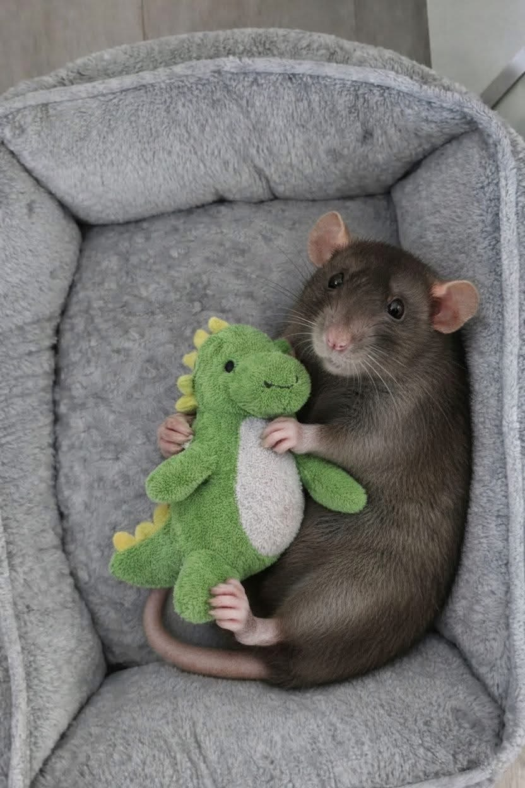
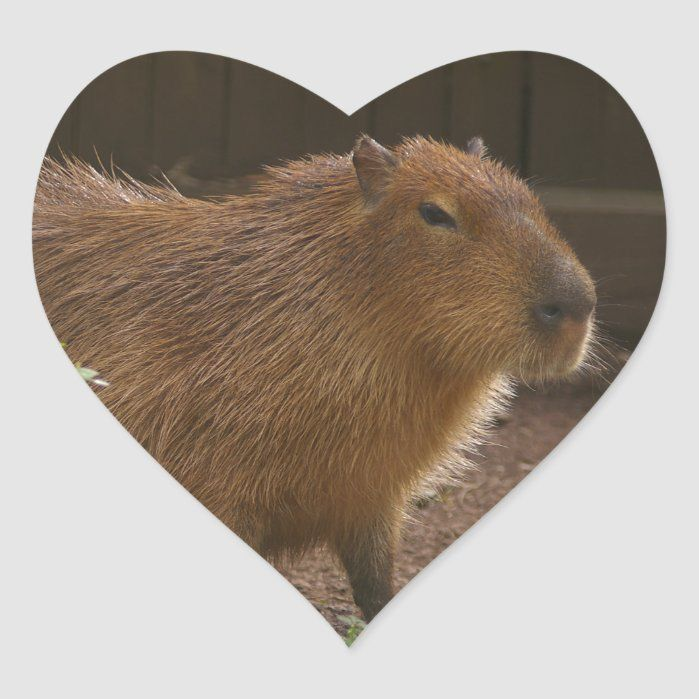
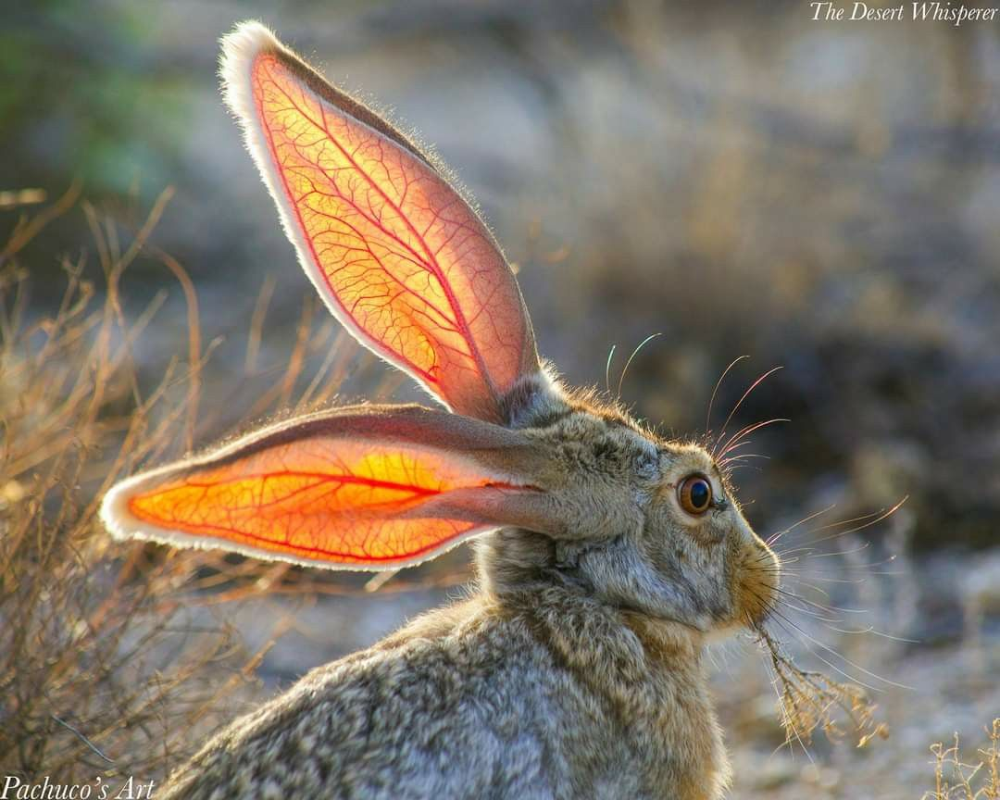
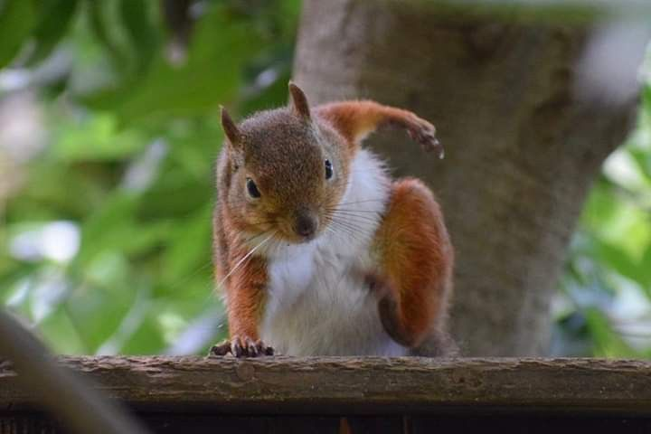
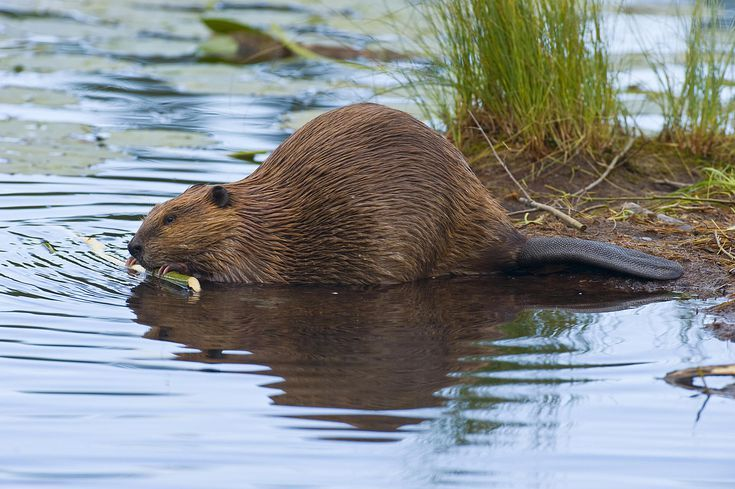

Roedores

¡Son muy lindas!Rattus
Ratas
Las ratas son roedores de cuerpo alargado, hocico puntiagudo y orejas largas que alcanzan el borde del ojo al estirarse hacia delante. La cola es alargada, delgada y casi desnuda, con algunas pequeñas escamas y pelos cortos; los ojos y las orejas son grandes y el pelaje espeso y de color variable, dependiendo de la especie. El vientre es siempre más claro; la línea de separación no está muy bien definida, pero es visible. Las hembras poseen cinco pares de mamas, dos pectorales y tres inguinales. Las hembras son ligeramente más pequeñas que los machos.Su dentición consta de 16 piezas, fórmula dentaria: 2(1/1, 0/0, 0/0, 3/3)=16, presentando tanto en la mandíbula superior como en la inferior, 2 incisivos, de crecimiento continuo, y 3 molares en cada semi arcada; carecen de caninos y premolares.La cola es una excelente herramienta que sirve para controlar sus saltos, como barra de equilibrio cuando caminan sobre tubos, cables o cuerdas y para equilibrarse mientras nada

¡ES mi perrita carpincha!Hydrochoerus hydrochaeris
Carpincho
Tiene un cuerpo pesado en forma de barril y una cabeza pequeña, con un pelaje pardo rojizo en la parte superior del cuerpo que se vuelve pardo amarillo. Puede crecer hasta 1,30 m de largo y llegar a pesar 65 kg. Presenta pies ligeramente palmeados, y de manera similar a otros cávidos, carece de cola y cuenta con veinte dientes. Sus patas posteriores son algo más largas que las anteriores, y los hocicos son romos, con ojos, narinas y orejas en la parte superior de la cabeza. Las hembras son ligeramente más pesadas que los machos.

¡Despientenla!Lepus
Liebre
Normalmente un animal tímido, la liebre marrón europea cambia su comportamiento en primavera, cuando las liebres se pueden ver durante el día persiguiéndose; esto parece ser la competencia entre los machos para alcanzar el dominio (y por lo tanto más acceso a las hembras receptivas). Durante este frenesí primaveral, las liebres se pueden ver haciendo "boxeo": una liebre golpeando a otra con sus patas (probablemente el origen del término inglés "loco como una liebre de marzo"). Durante mucho tiempo se pensó que se trataba de una competición intermasculina por las hembras, pero la observación más cercana ha revelado que puede también darse el caso de que una hembra golpee a un macho para evitar la cópula.

¡Son muy chiquitas!Sciurus vulgaris
Ardilla roja
Su cuerpo mide entre 17 y 20 cm y su cola entre 15 y 25 cm. Pesa de 450 a 540 g. Su pelaje es de color rojizo. Las orejas se adornan con un penacho de pelo muy llamativo cuando llega el invierno. En sus manos tiene cuatro dedos mientras que en las posteriores tiene cinco. Este roedor no presenta ningún tipo de dimorfismo sexual.Su fórmula dentaria es la siguiente:1.0.2.3/1.0.1.3 = 22.

¡Son los mejores contruyendo diques!Castor canadensis
Castor americano
Estos animales continúan creciendo durante toda su vida. El peso medio de los adultos es de 16 kg (kilogramos), y, aunque los especímenes de más de 25 kg no son comunes, se han encontrado ejemplares que han alcanzado los 40 kg. Las hembras llegan a ser tan grandes o incluso más que los machos de su misma edad, lo que es inusual entre los mamíferos. Generalmente miden unos 30 cm (centímetros) de alto por 75 cm de largo, sin contar la cola, que mide unos 25 cm de longitud por 15 cm de ancho; todos estos valores, no obstante, varían según diversos factores, incluyendo la edad y especie del individuo.